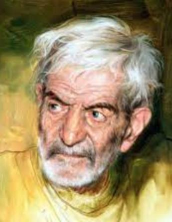

Şehriyar Tebrizi

Gerçek adı, Muhammed Hüseyin Behçet-Tebrizi, şiirlerinde kullandığı Şehriyar mahlası ile tanınan İran/Azerbaycan Türk'ü şairdir.
- Şehriyarın "Haydar Babaya Selam" şiirinde adı geçen, doğup büyüdüğü, Tebriz'e bağlı Hoşgenab köyü (harita).
İran Türklerinden olan Şehriyar, 1906'da Tebriz'de doğdu. Babası Mirismail Ağa Hoşgenabî, bir avukattı. İlk öğrenimini doğduğu şehirde tamamlayan şair, Medrese-i Talibiye'de aldığı Arapça ve Arap edebiyatı eğitiminin yanı sıra, Fransızca öğrendi. 1921 yılında Tahran'a gelerek Dar-ül Fünun okulunda tıp eğitimi almaya başlar. 1924 yılında aşkının peşinden Horasan'a gider. 1935 yılında Tahran'a geri dönerek İran Ziraat Bankasında çalışmaya başlamıştır.
1951 yılında Haydar Babaya Selam şiir kitabını yayımlamıştır. Haydar Baba, köyündeki bir dağın adıdır.
18 Eylül 1988 yılında Tahran'da vefat eden şairin ölüm günü, O'nun anısına, İran'da Millî Şiir Günü olarak kutlanıyor.